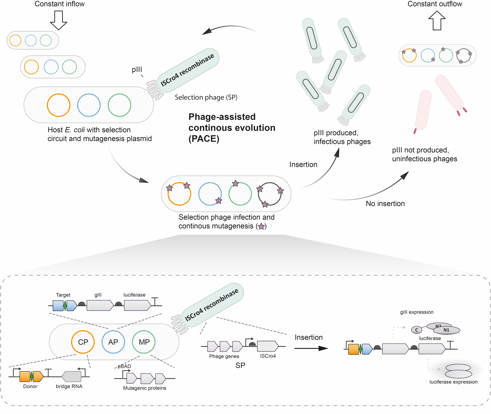
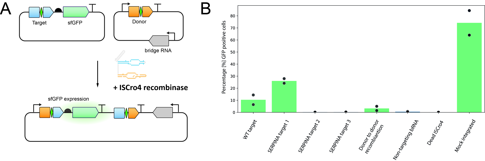
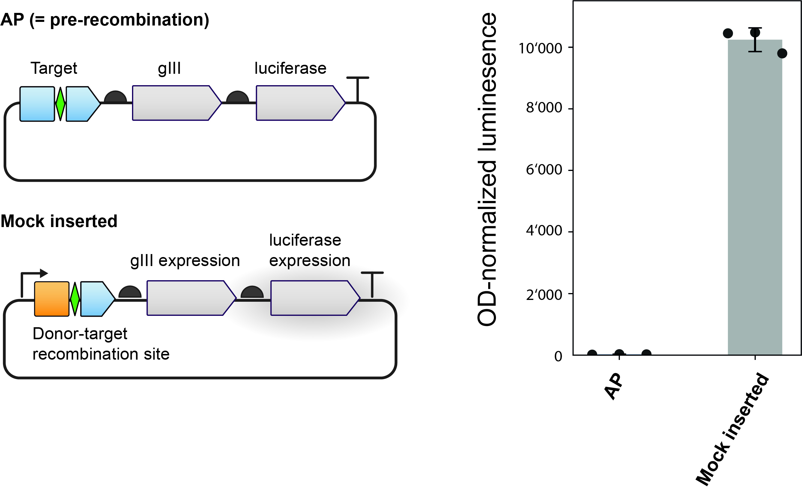
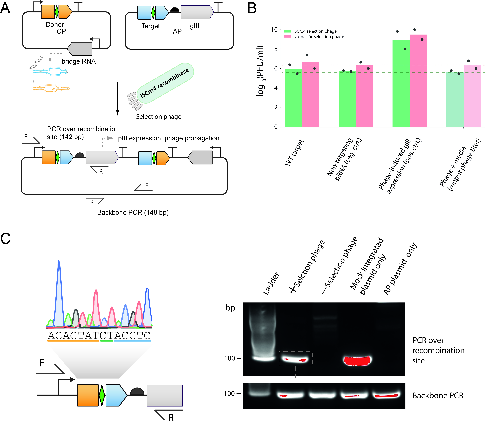

PACE
Introduction & Results
Here we outline the rationale, design and preliminary testing of a insertion based phage-assisted continuous evolutions (PACE) 1 logic for evolving bridge recombinases on the example of the ISCro4 bridge recombinase.
The selection logic leverages the essential phage gene gIII, which encodes the coat protein pIII required for infectivity and replication. In our system (see Figure1), the selection phage (SP) carries the evolving ISCro4 recombinase but does not contain gIII; as a consequence, SPs cannot replicate unless gIII is provided in trans by the host. To couple gIII expression tightly to successful recombination, the accessory plasmid (AP) carried by the host encodes gIII (and a luciferase reporter) without a promoter, and places the appropriate recombination target sequence upstream of these genes. A separate complementary plasmid (CP) encodes the bRNA and the donor sequence, and includes a promoter upstream of the donor. The intended recombination event moves that promoter into the correct position in front of gIII (and luciferase, when present). Thus, without recombination, there is no gIII expression and the SP cannot propagate; with successful recombination, the promoter is repositioned to drive pIII production, enabling replication of SPs that encode functional (and ideally improved) ISCro4 variants. In continuous culture, this design should favour variants that recombine efficiently at the programmed site, because only those variants gain access to pIII and can outcompete the dilution imposed by the lagoon flow.

Although ISCro4 is highly active in human cells, its activity in E. coli has not been documented. To test whether ISCro4 can catalyse promoter-repositioning insertions (modelling the insertion needed to restore a healthy SERPINA1 copy) in bacteria when paired with designed bRNAs, we constructed an sfGFP reporter that mirrors the PACE selection logic (Figure2A). In this system, sfGFP is carried on a low-copy plasmid with the recombination target site (either ISCro4 WT target, SERPINA1 target 1-3 or ISCro4 WT donor sequence) upstream and no promoter - analogous to gIII on the AP - and is co-transformed with a CP encoding the bRNA and a promoter–donor cassette, together with an arabinose-inducible ISCro4 expression plasmid.

We observed that wild-type ISCro4 catalyses insertion in E. coli in a recombinase- and bRNA-dependent manner: sfGFP activation was not detected with catalytically dead ISCro4 or with non-targeting bRNA controls. Moreover, bRNA reprogrammed to SERPINA target 1 exhibits activity above the wild-type target after 20 h after arabinose induction. While the precise percentage of GFP-positive cells depends on construct and growth conditions, these results establish that (i) ISCro4 is active in E. coli and (ii) activity can be redirected by designed bRNAs to non-native targets. Together, the sfGFP data support the feasibility of using the same promoter-repositioning logic to control gIII during selection. Although ISCro4 catalyses the intended donor–target insertion, prior work has also reported donor–donor recombination, a major potential source of off-target events 2. To directly assess donor–donor activity, we modified the AP by replacing the upstream target site with a copy of the donor sequence. In line with the previously published data 2, ISCro4 exhibited donor-donor recombination.
To quantify the transcriptional gain produced by promoter repositioning and to validate that the post-recombination state strongly expresses gIII, we designed a mock-integrated plasmid that mimics the recombination product: the promoter is pre-installed upstream of gIII. On the same transcript downstream of gIII, a luciferase is expressed to enable a luminescent readout proportional to transcription through the gIII–lux cassette. When comparing strains carrying the pre-recombination configuration versus the mock-integrated (post-recombination) construct, we observed a ~10,000-fold (four-orders-of-magnitude) increase in luminescence for the mock-integrated state (Figure3), indicating a working transcription unit upon site-specific insertion.

Having established activity and a transcriptional readout, we next asked whether the full selection logic supports phage propagation. We infected E. coli carrying the AP and CP with the ISCro4 selection phage (SP–ISCro4) and incubated cultures overnight (Figure4A). As an initial test, we used WT ISCro4 with its cognate bRNA and quantified titres the following day. Under these conditions, no significant titre increase was observed relative to input phage titre and negative controls (non-targeting bRNA) (Figure4B). Nonetheless, junction-specific PCR spanning the donor–target recombination site yielded the expected product, confirming that recombination occurred despite the lack of phage amplification (Figure4C).

Conclusion
Although we confirmed that ISCro4 is active in E. coli and that correct insertion drives strong gIII transcription, we saw no titer increase under initial conditions, despite junction-PCR confirming recombination. Two factors likely explain this: (i) host burden from AP+CP plus ISCro4 expression and the recombination process itself, which can slow growth, impair F-pilus biogenesis, and limit phage production/release; and (ii) kinetics: the rates of recombination of WT ISCro4 and subsequent pIII accumulation may be too slow to support measurable propagation.
To overcome the barrier of low rate of recombination with WT ISCro4, we will begin with neutral drift of the selection phage and phage-assisted non-continuous evolution (PANCE) under permissive conditions to accumulate diversity. Once amplification is detectable, we will incrementally raise stringency and transition toward continuous selection. Addionally DML can be employed to select a higher efficiency starting variant to be used in combination with the PACE logic.
References
-
Miller SM, Wang T, Liu DR. Phage-assisted continuous and non-continuous evolution. Nature Protocols. 2020;15(12):4101–4127. doi:10.1038/s41596-020-00410-3. ↩
-
Perry NT, Bartie LJ, Katrekar D, Gonzalez GA, Durrant MG, Pai JJ, Fanton A, Martins JQ, Hiraizumi M, Ricci-Tam C, Nishimasu H, Konermann S, Hsu PD. Megabase-scale human genome rearrangement with programmable bridge recombinases. Science. 2025;:eadz0276. doi:10.1126/science.adz0276. PMID:40997214. Online ahead of print, 2025 Sep 25. ↩↩